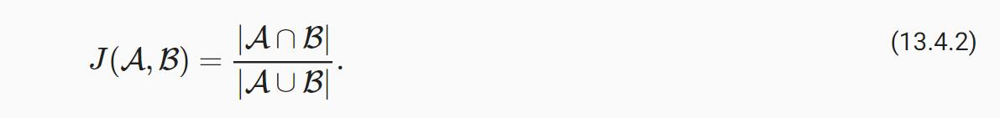
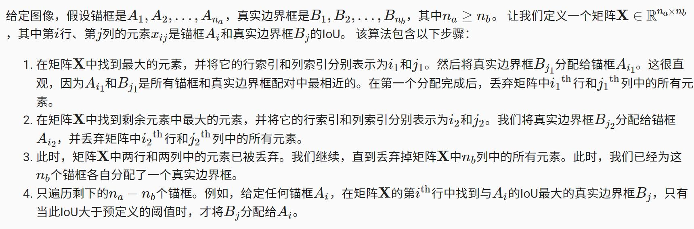
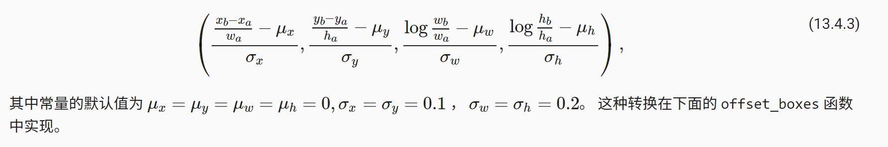
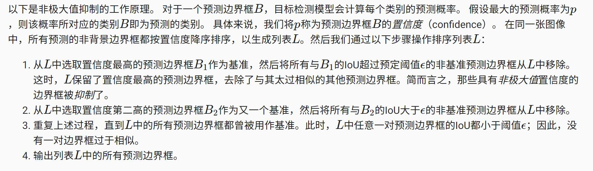

锚框
目标检测算法通常会在输入图像中采样大量的区域，然后判断这些区域中是否包含我们感兴趣的目标，并调整区域边界从而更准确地预测目标的真实边界框（ground-truth bounding box）。 不同的模型使用的区域采样方法可能不同。 这里我们介绍其中的一种方法：以每个像素为中心，生成多个缩放比（scale）和宽高比（aspect ratio）不同的边界框。 这些边界框被称为锚框（anchor box）
假设输入图像的高度为h，宽度为w。 我们以图像的每个像素为中心生成不同形状的锚框：缩放比为s∈(0,1]，宽高比为r>0。 那么锚框的宽度和高度分别是ws√r和hs/r
要生成多个不同形状的锚框，让我们设置许多缩放比（scale）取值s1,…,sn和许多宽高比（aspect ratio）取值r1,…,rmr1,…,rm。 当使用这些比例和长宽比的所有组合以每个像素为中心时，输入图像将总共有whnm个锚框。 尽管这些锚框可能会覆盖所有真实边界框，但计算复杂性很容易过高。
交并比（IoU）
如果已知目标的真实边界框，我们可以衡量锚框和真实边界框之间的相似性。 我们知道杰卡德系数（Jaccard）可以衡量两组之间的相似性。 给定集合A和B，他们的杰卡德系数是他们交集的大小除以他们并集的大小：

事实上，我们可以将任何边界框的像素区域视为一组像素。通 过这种方式，我们可以通过其像素集的杰卡德系数来测量两个边界框的相似性。 对于两个边界框，我们通常将它们的杰卡德系数称为交并比（intersection over union，IoU），即两个边界框相交面积与相并面积之比，如 图13.4.1所示。 交并比的取值范围在0和1之间：0表示两个边界框无重合像素，1表示两个边界框完全重合。
在训练数据中标注锚框
在训练集中，我们将每个锚框视为一个训练样本。 为了训练目标检测模型，我们需要每个锚框的类别（class）和偏移量（offset）标签，其中前者是与锚框相关的对象的类别，后者是真实边界框相对于锚框的偏移量。 在预测时，我们为每个图像生成多个锚框，预测所有锚框的类别和偏移量，根据预测的偏移量调整它们的位置以获得预测的边界框，最后只输出符合特定条件的预测边界框。
@@@@@@@@@@@@@@@@@@@@@
哦，原来是这样，每个锚框是一个训练样本， 标签是类别和偏移量。
训练之后，给定一个锚框，理想情况下，通过推断，网络计算结果输出偏移量，通过偏移量获取预测框。
所以说目标检测是回归任务？
@@@@@@@@@@@@@@@@@@@@@
目标检测训练集带有“真实边界框”的位置及其包围物体类别的标签。 要标记任何生成的锚框，我们可以参考分配到的最接近此锚框的真实边界框的位置和类别标签。 在下文中，我们将介绍一个算法，它能够把最接近的真实边界框分配给锚框。
将真实边界框分配给锚框

1 | #@save |
标记类别和偏移量
现在我们可以为每个锚框标记类别和偏移量了。 假设一个锚框A被分配了一个真实边界框B。 一方面，锚框A的类别将被标记为与B相同。 另一方面，锚框A的偏移量将根据B和A中心坐标的相对位置以及这两个框的相对大小进行标记。 鉴于数据集内不同的框的位置和大小不同，我们可以对那些相对位置和大小应用变换，使其获得分布更均匀且易于拟合的偏移量。 在这里，我们介绍一种常见的变换。 给定框A和B，中心坐标分别为(xa,ya)和(xb,yb)，宽度分别为wa和wb，高度分别为ha和hb。 我们可以将A的偏移量标记为：

如果一个锚框没有被分配真实边界框，我们只需将锚框的类别标记为“背景”（background）。 背景类别的锚框通常被称为“负类”锚框，其余的被称为“正类”锚框。
使用非极大值抑制预测边界框
当有许多锚框时，可能会输出许多相似的具有明显重叠的预测边界框，都围绕着同一目标。 为了简化输出，我们可以使用非极大值抑制（non-maximum suppression，NMS）合并属于同一目标的类似的预测边界框。

实践中，在执行非极大值抑制前，我们甚至可以将置信度较低的预测边界框移除，从而减少此算法中的计算量。 我们也可以对非极大值抑制的输出结果进行后处理。例如，只保留置信度更高的结果作为最终输出。
小结
- 我们以图像的每个像素为中心生成不同形状的锚框。
- 交并比（IoU）也被称为杰卡德系数，用于衡量两个边界框的相似性。它是相交面积与相并面积的比率。
- 在训练集中，我们需要给每个锚框两种类型的标签。一个是与锚框中目标检测的类别，另一个是锚框真实相对于边界框的偏移量。
- 在预测期间，我们可以使用非极大值抑制（NMS）来移除类似的预测边界框，从而简化输出。